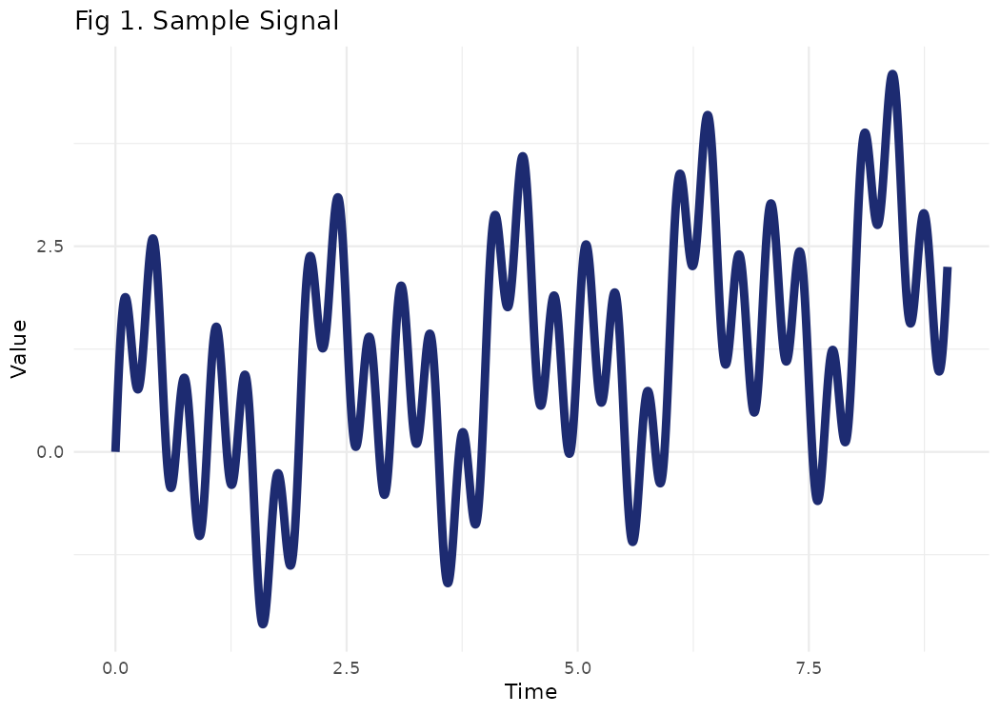
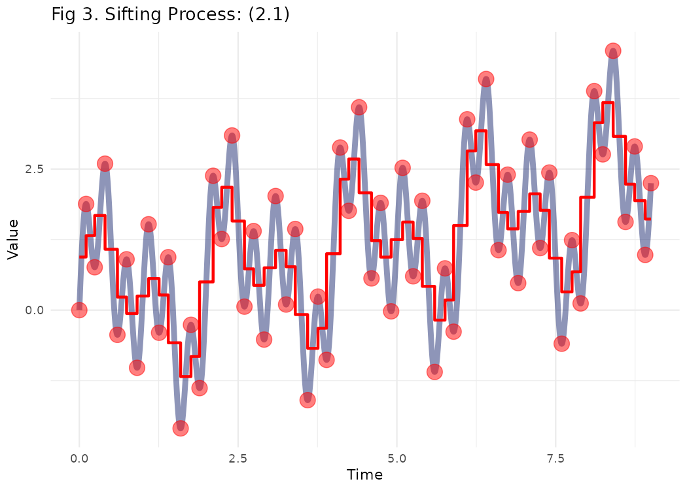
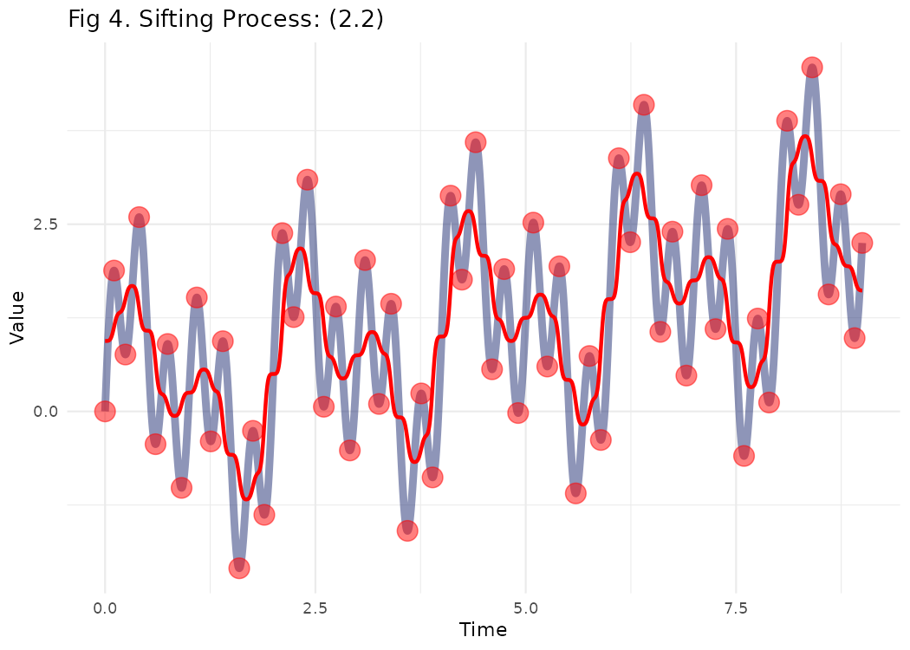
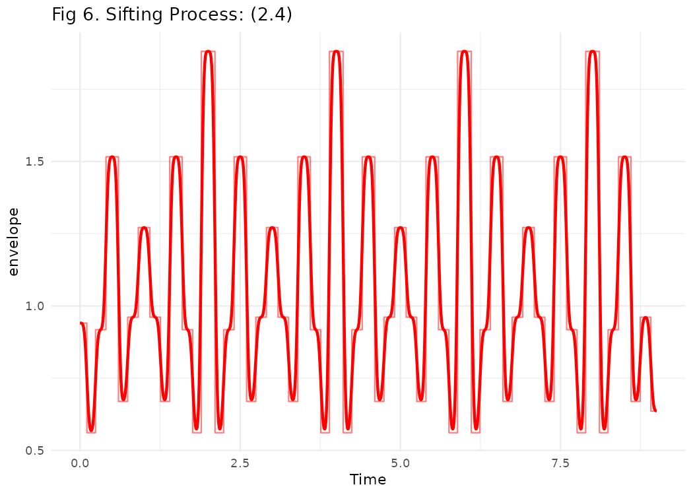

Getting_Started_with_LMD
Shubhra Prakash
2025-10-02
Source:vignettes/Getting_Started_with_LMD.Rmd
Getting_Started_with_LMD.RmdAbstract
The R package LMD is introduced in this work, which is based on local mean decomposition, an iterative and self-adaptive approach for demodulating, processing, and analyzing multi-component amplitude-modulated (AM) and frequency modulated (FM) signals. Any complex signal can be decomposed into product functions (PFs) using LMD, where each PF is the product of an envelope signal and a purely frequency modulated signal (FM). The LMD method can be used to a broad variety of natural signals, including electrocardiograms and seismic data. In addition, because equipment fault vibration signals are frequently multi-component modulation signals, LMD may be used to identify faults in gears, roller bearings, and other rotating machinery. The LMD package includes utilities for calculating extreme points and moving averages. LMD as a package includes functions for finding extreme points, moving average smoothing, checking monotonicity, extracting mean and envelope signals, extracting product functions and graphical display of results. In this vignette we will cover the mentioned functions for experimental analysis of a simulated signal to show the validity of the LMD method.
Introduction
Rotating machines are widely used in many sectors and are susceptible
to a wide range of failures, particularly when working in tough and
time-varying situations. Early discovery of these faults is critical;
otherwise, they may result in significant economic loss, if not a
catastrophe. As a result, the development of effective defect diagnostic
techniques is critical for safety and improved maintenance decision
making in rotating equipment applications. There are many feature
extraction techniques available today for the detection of rotating
machinery faults, such as frequency/spectrum analysis, time/statistical
analysis, time-frequency analysis, and so on. However, the approaches
described above are only applicable to mono-component modulation
signals, and also do not perform well for non-stationary signals.
Signals acquired from machines not only have the frequency of the
machine component of interest, but also interference frequencies from
other neighboring components and environmental disturbances. The
phenomena of amplitude modulation, frequency modulation, and phase
modulation are also frequent in these signals. Furthermore, rotating
machines frequently operate under time-varying speed and load
circumstances, causing the signals obtained from them to be non-linear.
If a failure starts developing in these machines, the fault signature is
difficult to identify owing to the interferences indicated above.
Adaptive mode decomposition approaches work well with non-stationary
time series data. These procedures do not need any prior understanding
of the signals and are good in capturing the local features of a signal,
such as malfunction indication. LMD is also an adaptive technique that
can decompose a complex multi-component signal into a series of product
functions (PFs) on its own.
LMD
A multi-component signal can be broken down into its constituent PFs and a residue. Each PF is a mono component that is the result of an envelope signal and a frequency modulated signal. In LMD a two-tier method is utilized to perform the demodulation .First, the inner cycle is used to conduct a thorough computation of the PF. Second, in the outer cycle, the signal is decomposed depending on the iterations. In the following sections the methods have been broken down into steps that LMD technique requires to complete the analysis on a given signal x(t). Consider the following synthetic signal of the form :
The above signal is represented in graphical form below:
fs <- 2000 #Sampling Frequency
time_component <- seq(from = 0, to = 9, by = 1 / fs)
# Simulated Signal
signal <- (0.25 * time_component + sin(pi * time_component) + sin(2 * pi * time_component) +
sin(6 * pi * time_component))
dummy_df <- data.frame(Time = time_component, Value = signal)
p1 <- ggplot(dummy_df) +
aes(x = Time, y = Value) +
geom_spline(size = 2, colour = "#1D2B71") +
scale_color_hue() +
labs(title = "Fig 1. Sample Signal") +
theme_minimal() +
theme(legend.position = "none")
plot(p1)
Steps for PF Extraction
Step 1
In the first step, all the local extrema
are extracted from the original signal
.
The extreme values of a signal can be found out by using the
find_extrema function from LMD.
LMD::find_extrema(signal)find_extrema function expects following parameters:
-
signal: Signal is a vector of numeric values -
include_endpoints: A logical value indicating whether to include end points or not. Default value for this is set to TRUE.
The function returns indexes of all extreme values. In the below chunk the extreme values of the original sample signal x(t) have been indicated by red color.
extreme_values <- LMD::find_extrema(signal)
p2 <- ggplot() +
geom_spline(
data = dummy_df,
aes(x = Time, y = Value),
size = 2,
colour = "#1D2B71"
) +
geom_point(aes(x = dummy_df$Time[extreme_values], y = dummy_df$Value[extreme_values]),
size = 5,
colour = "red") +
scale_color_hue() +
labs(title = "Fig 2. Sifting Process: (1)") +
theme_minimal() +
theme(legend.position = "none")
plot(p2)
Step 2
In the second step the mean value is calculated by taking average of the current extrema and the next extrema . So the mean value of each two successive extrema and is given by:
All the mean values of two successive extreme are connected by straight lines, as shown below:
extreme_values <- LMD::find_extrema(signal)
ma_enve = local_mean_and_envelope(signal, extreme_values)
mean = ma_enve$mean
p3 <- ggplot() +
geom_spline(
data = dummy_df,
aes(x = Time, y = Value),
size = 2,
colour = "#1D2B71",
alpha = 0.5
) +
geom_point(
aes(x = dummy_df$Time[extreme_values], y = dummy_df$Value[extreme_values]),
size = 5,
colour = "red",
alpha = 0.5
) +
geom_line(aes(x = dummy_df$Time, y = mean),
size = 1,
colour = "red") +
scale_color_hue() +
labs(title = "Fig 3. Sifting Process: (2.1)") +
theme_minimal() +
theme(legend.position = "none")
plot(p3)
The local mean function is derived by taking a moving weighted average of the means .
ma = ma_enve$ma
p4 <- ggplot() +
geom_spline(
data = dummy_df,
aes(x = Time, y = Value),
size = 2,
colour = "#1D2B71",
alpha = 0.5
) +
geom_point(
aes(x = dummy_df$Time[extreme_values], y = dummy_df$Value[extreme_values]),
size = 5,
colour = "red",
alpha = 0.5
) +
geom_line(aes(x = dummy_df$Time, y = ma),
size = 1,
colour = "red") +
scale_color_hue() +
labs(title = "Fig 4. Sifting Process: (2.2) ") +
theme_minimal() +
theme(legend.position = "none")
plot(p4)
Similarly the envelope value is given by:
envelope = ma_enve$enve
Time=dummy_df$Time
p5 <- ggplot() +
geom_line(aes(x = Time, y = envelope),
size = 1,
colour = "red") +
scale_color_hue() +
labs(title = "Fig 5. Sifting Process: (2.3)") +
theme_minimal() +
theme(legend.position = "none")
plot(p5)The envelope values are smoothed using weighted moving average and the envelope function (t) is formed.
enve_sm = ma_enve$enve_sm
Time=dummy_df$Time
p6 <- ggplot() +
geom_line(aes(x = Time, y = envelope),
size = 0.5,
colour = "red",alpha=0.5) +
geom_line(aes(x = Time, y = enve_sm),
size = 1,
colour = "red") +
scale_color_hue() +
labs(title = "Fig 6. Sifting Process: (2.4) ") +
theme_minimal() +
theme(legend.position = "none")
plot(p6)
The local mean and envelope and corresponding smoothed values can be
found out by using the local_mean_and_envelope function
from LMD.
LMD::local_mean_and_envelope(signal, extrema)local_mean_and_envelope function expects following
parameters:
-
signal: Signal is a vector of numeric values -
extrema: A vector of numeric values for indexes for extreme values in the signal
The function returns local mean, moving averaged local mean, envelope and moving averaged local envelope values.
Step 3
In the step 3 we calculate the zero-mean signal (t) by taking a difference of the original signal and the local mean function (t) :
Step 5
Repeat the above steps 1 to 3 to get the envelope value (t) of (t) . This is the checkpoint for the inner loop, if this envelope function (t) is equal to 1, the inner iteration is stopped and (t) is considered as the first purely frequency modulated (FM) signal. Else, the (t) is considered as the original signal and Steps 1 to 4 are repeated n times until the condition (t)=1 is satisfied for signal (t).
Step 6
Calculate the envelope signal (t) of the first PF1 , multiply all the smoothed local envelopes from the iterations:
Step 7
Compute the first using and :
Now the residual signal is given by = - . The residual is considered as the original signal and the above steps are repeated n times until does not contain oscillation.
This is the called outer loop of LMD. Finally, the signal x(n) is represented as a sum of PFs and residual signal:
The LMD method can be applied on a signal by using the
lmd function from LMD Package.
LMD::lmd(signal)lmd function expects following parameters:
-
signal: Signal is a vector of numeric values -
include_endpoints: A boolean value indicating whether to treat the endpoint of the signal as a pseudo-extreme point -
max_smooth_iteration: An integer value for maximum number of iterations of moving average algorithm -
max_envelope_iteration: An integer value for maximum number of iterations when separating local envelope signals -
envelope_epsilon: A float value to terminate processing when obtaining pure FM signal -
convergence_epsilon: A float value to terminate processing when modulation signal converges -
max_num_pf: An integer value for maximum number of PFs to be generated
The function returns PF and residual value as a list.
Analysis of a simulated signal
In this section we will take a simulated multi-component AM–FM signal x(t) and apply the LMD method on it. The time duration of the signal is 600s with sampling frequency of 1 Hz.
The plot below shows the time domain waveform for , and respectively.
t=0:600
x1=(1+0.5*cos(pi*t/100))*(cos(pi*t/2+2*cos(pi*t/50)))
x2=4*sin(pi*t/2500)*sin(6*pi*t/50)
y=x1+x2
Time=t
combined_signal=y
p7 <- ggplot() +
ggplot2::geom_line(aes(x = Time, y = combined_signal),
size = 1,
colour = "midnightblue") +
ggplot2::ylab("Combined Signal x(t)") +
ggplot2::theme_bw() +
ggplot2::theme(
panel.border = ggplot2::element_rect(size = 0.1),
legend.position = c(0.8, 0.8),
panel.grid.major.x = ggplot2::element_blank()
)
#> Warning: The `size` argument of `element_rect()` is deprecated as of ggplot2 3.4.0.
#> ℹ Please use the `linewidth` argument instead.
#> This warning is displayed once every 8 hours.
#> Call `lifecycle::last_lifecycle_warnings()` to see where this warning was
#> generated.
p8 <- ggplot() +
ggplot2::geom_line(aes(x = Time, y = x1),
size = 1,
colour = "midnightblue") +
ggplot2::ylab("x1(t)") +
ggplot2::theme_bw() +
ggplot2::theme(
panel.border = ggplot2::element_rect(size = 0.1),
legend.position = c(0.8, 0.8),
panel.grid.major.x = ggplot2::element_blank()
)
p9 <- ggplot() +
ggplot2::geom_line(aes(x = Time, y = x2),
size = 1,
colour = "midnightblue") +
ggplot2::ylab("x2(t)") +
ggplot2::theme_bw() +
ggplot2::theme(
panel.border = ggplot2::element_rect(size = 0.1),
legend.position = c(0.8, 0.8),
panel.grid.major.x = ggplot2::element_blank()
)
print((p7/p8/p9)+
plot_annotation(title = "Fig 8. Simulated Signal"))lmd function is applied to decompose the simulation
signal x(t) by selecting max_num_pf as 2.
lmd_object=LMD::lmd(combined_signal,max_num_pf=2)
PF1=lmd_object[["pf"]][[1]]
PF2=lmd_object[["pf"]][[2]]
residual_signal=lmd_object[["residue"]]The decomposition results are presented in plot below using
plot_lmd function. plot_lmd function expects
following parameters:
-
lmd_obj: LMD object created from LMD function -
max_pf: Number of PFs to Plot -
show_residue: Whether to plot residue signal or not -
pricolor_plot: Line color for plots -
line_size_plot: Size of line in ggplot
The function returns a combined plot for PF and residual values.
plot_lmd(lmd_object)+
plot_annotation(title = "Fig 9. LMD Decompsition of Simulated Signal")In the plot above the product functions and the residual signal obtained by decomposition of original signal is shown. The first product function PF1(t) corresponds to constituent x1(t) and second product function PF2 is the signal close to original constituent x2(t). PF1(t) and PF2(t) are very close and similar to x1(t) and x2(t), respectively. However, the residue signal contains some abnormal peaks, and the corresponding disturbances can be seen in PFs as well, which shows that the demodulation is close but not perfect. In the next section we address these imperfections.
Drawbacks of LMD
LMD shows great capability in demodulating amplitude and frequency modulated signals. Be that as it may, it is noticeably flawed. It has inadequacies, namely end effects and mode mixing. For better understanding, these imperfections have been highlighted in the plot that we received in above step(Fig 9). In Fig. 10, if we look closely at the ends of residual signal, we can notice the first and the last value deviating a lot from the rest of the signal, this effect is visible in PFs also. This peculiarity is known as the end effect of LMD. Furthermore, we can see some more deviations at around 500 s. This is called mode mixing of LMD. To mitigate these issues, several variations of LMD (like RLMD,IELMD,OLMD etc) have been proposed by researchers, however, these methods have not been included in this package.
References
- D. Kim and H.-S. Oh, “EMD: A package for empirical mode decomposition and Hilbert spectrum,” The R Journal, 01-Jun-2009. [Online]. Available: https://journal.r-project.org/articles/RJ-2009-002/. [Accessed: 17-Sep-2022]. J. Cheng, Y. Yang, and Y. Yang, “A rotating machinery fault diagnosis method based on local mean decomposition,” Digital Signal Processing, 19-Oct-2011. [Online]. Available: https://www.sciencedirect.com/science/article/pii/S1051200411001448. [Accessed: 17-Sep-2022].
- “Review of local mean decomposition and its application in fault diagnosis of rotating machinery,” IEEE Xplore. [Online]. Available: https://ieeexplore.ieee.org/document/8820748. [Accessed: 17-Sep-2022].
- Y. Li, M. Xu, Z. Haiyang, Y. Wei, and W. Huang, “A new rotating machinery fault diagnosis method based on improved local mean decomposition,” Digital Signal Processing, 08-Jul-2015. [Online]. Available: https://www.sciencedirect.com/science/article/pii/S1051200415002213. [Accessed: 17-Sep-2022].
- Z. Liu, Y. Jin, M. J. Zuo, and Z. Feng, “Time-frequency representation based on robust local mean decomposition for multicomponent AM-FM signal analysis,” Mechanical Systems and Signal Processing, 10-Apr-2017. [Online]. Available: https://www.sciencedirect.com/science/article/pii/S0888327017301619. [Accessed: 17-Sep-2022].